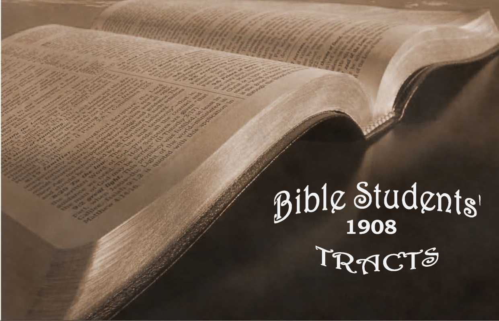

No. 81—Gathering the Lord’s Jewels. The Hope of Immortality
PRIMARY STUDIES IN THE SCRIPTURES BROOKLYN, N. Y.
BRANCHES: LONDON, N.W., 24 EVERSHOLT ST.; MELBOURNE, EQUITABLE BLDG., COLLINS ST. BARMEN- ELBERFELD, COPENHAGEN, ORHBRO, YVERDON-SUISSE
T EWELS have a value of their own, an intrinsic qual-) ity, and no doubt would be appreciated if they were very plentiful, but their appreciation is all the more marked because of their comparative scarcity. The figures and similes used throughout the Scriptures by the holy Spirit are full of significance, and this one as well as others. When the Lord likens his faithful people to the precious stones, jewels, it signifies that there is an intrinsic value or beauty that he appreciates, and it implies also that such characters are, in comparison to the world, very scarce—a “little flock.”
Our text points to the close of the Gospel Age, and not only tells us that the Lord will not gather his jewels sooner, but implies also that the only class to be gathered at that time will be the jewel class—he comes to make up his jewels. We have here a contradiction of the ordinary thoughts on this subject: (1) That the Lord has been gathering his jewels all along for the past six thousand years; evidently an erroneous thought, since he has appointed a day, in the end of this age, in which he will gather, or make up, his jewels. (2) It exposes the fallacy of the thought that everybody who is respectable, half-way decent, is to be gathered to the Lord, and share in his Kingdom; for it distinctly points -out- that—a very exceptional class •only will be sought for and gathered.
The class here described as jewels are contrasted with other classes in the context (v. 15), “the proud,” who have much of the success of the present time, and workers of wickedness, who tempt God, and are not careful to please and serve him—and such evidently are the majority of mankind. The jewel class is described in v. 16 as “They that feared Jehovah”—that reverenced him, “and that thought upon his Word.”
But, we inquire, Where are jewels usually found? The answer of the figure is that jewels may be found in very unexpected places, as, for instance, the diamonds of South Africa are sometimes mingled with the ordinary gravel, and sometimes imbedded in bluish-black clay. They all require to be searched after, and generally require to be washed from the mire, before being prepared to refract the light. So some of these “jewels,” whom the Lord is now seeking out from the world, are found in the ordinary walks of life, and some came from deep down in the mire of sin. In the w'orld of mankind the Lord does not expect to find the jewels in perfect order, shaped, cut, polished and ready for the setting in glory. On the contrary, by one class of his servants he lifts them out of the mire of sin and out of the horrible pit, and washes them, cleanses them from sin through the merit of his own precious blood, and through his Word; and then through other servants and providences he polishes them with divine skill, to the intent that they may reflect and refract the light- of the glory of God—the divine character,—justice, wisdom, love.
As the diamond in its rough state, uncut, unpolished, would have no more value than any other common stone for ordinary purposes, so those whom the Lord is selecting and preparing as his jewels are to derive their ultimate value from the cutting, shaping, polishing, of their characters under divine providence; as it is written, “We are his workmanship.” (Eph. 2:10.) We cannot suppose the illustration to be perfect in every particular, yet we may readily see that, while divine grace is to be credited with the entire outcome— the beauty and grace of the finished jewel—yet nevertheless divine grace operates according to principles and conditions, under divine law. As the experienced diamond miners reject the soft clay and various of the hard stones, in seeking for those of the desirable kind, so the great Jewel-Gatherer operates according to a principle in.seeking for his jewels.
“EVEN AS MANY AS THE LORD SHALL CALL.”
The hardness of the diamond may be used to represent character, and we are to remember that character belongs to the individual and not to God. Each of us must have his owfi character, and only in proportion as each has character can he hope to be accepted finally as a jewel, for those without character will not endure the tests. As the diamond-seeker lays hold upon everything in his path that gives evidence of having the diamond quality, so divine grace, operating in the diamond field of the world (Christendom, and wherever the Word of the Lord has gone), lays hold upon all who have anything resembling character. The soft, (he pliable, the uncrystallized, are not being sought now, and coming in contact with divine grace are passed by. Only such as give evidence of character are thought even worthy of washing and testing.
The hard crystallization of the diamond corresponds to willingness toward righteousness in the individual; and unless there be such willingness toward God and righteousness there is none of the jewel quality which the Lord is now seeking. Those whose wills are formed, crystallized, set, determined for righteousness, are they whom the Lord is now seeking. And here we have the imperfection of the simile; for, while all diamonds are alike hard, the great Jewel-Seeker accepts some in whom the crystallizing process is incomplete, and “helps our infirmities,” developing in us by his providences the quality of firmness for righteousness, at the same time that he polishes us.—Rom. 8:26.
But even when the rough diamond has been found, as before observed, it would be of no value, except as it could be cut—indeed, of less value than other stones and clay for many purposes. So it is with those whom divine grace finds in the mire of sin, having, nevertheless, will or character desiring righteousness, truth, goodness, justice,—“feeling after God” (Acts 17:27); the great Jewel-Cutter, the great Lapidarist, must really give them all their value, by his wisdom and skill in shaping, cutting and polishing them. Yet, on the other hand, fie could not cut. shape or polish that -which had not the quality or character, the will for righteousness, essential to the receiving of such a polishing. Those, therefore, who are in the hands of the great Lapidarist, and undergoing his polishing process, must first have passed through the previous experience of having been found of divine grace—found of the Lord Jesus; must first have been washed; and must have been accepted as having wills desirous of harmony with the divine mind. Therefore, they may take pleasure in all the trying experiences and difficulties through which our Lord Jesus causes them to pass as various parts of the grinding and polishing process, necessary to their completion as Jehovah’s jewels, to be made up by the close of the Gospel Age, and to be set in the gold of the divine nature, to reflect the beauties of the divine character forever.
It is in harmony with this thought that the Apostle encourages us to rejoice in tribulation, knowing that it is working out for us patience, experience, hope, brotherly kindness, love,—the various facets of the jewel essential to it in the eyes of him who is shortly to gather his jewels. The Apostle again speaks of even the most trying and difficult experiences of the Christian life as being “light afflictions,” and he speaks of the present life as being, in comparison to the eternal future, but “a moment,” saying, "Our light affliction, which is but for a moment, worketh for us a far more exceeding and eternal weight of glory.”—Rom. 5:3-5; 2 Cor. 4:17.
“ABANDON US NOT IN TEMPTATION.”
The lapidarist takes firm hold upon the jewel which he has already tested and proved to have the requisite jewel quality, and encasing it in a suitable instrument, he presses it against the friction, a lap-wheel, with just the required amount of pressure to cut away the roughness and unevenness, and to effect the necessary shaping and polishing. The process requires great skill, otherwise at times much of the value of the stone might be lost through misshaping; hence only skilled workmen are employed in this department.
For instance, the celebrated Kohinoor diamond originally weighed nearly 800 karats, but in the hands of a poor cutter was reduced to 280 karats. Yet so much of a diamond’s value depends on skilful cutting, that more than one-half of its size was subsequently sacrificed in recutting it, to obtain symmetry, beauty, and refractive power, and now it weighs less than 107 karats.
So it is with the polishing of the Lord’s jewels; their value depends much.on proper cutting; and this is entrusted only to the skilled hands of our Lord Jesus-Christ, of whom we are assured in advance that he was tempted in all points like as we are—that he himself passed through similar experiences of testings, etc., at the Father’s hands. He knows just what we need to perfect us, so that we will be pleasing and acceptable to the Father, to reflect and refract the light of his glory when it shall fall upon us in our finished state. A part of our lesson is to have faith in this great Master-Workman whom the Father has appointed to shape and polish us. We may require much more trimming on some sides of our characters than on others; and the disposition often is to “draw back,” to be not fully submissve, to fear that the Lord has forgotten and abandoned us in trial. But infinite wisdom assures us, guarantees us, that this is not so, and that to draw back would leave us “unfit for the Kingdom.”—Heb. 13:5; Luke 9:62.
The earthly lapidary imbeds in cement the. jewel he is polishing, except the facet which he is grinding, so that neither he nor any other sees it during the operation, except as he lifts it, cools it and examines the progress of his work; but all the while he knows just what is being done, for he has an instrument called a “Lapidary’s Dial,” which indicates the position of the jewel, exactly, and avoids the poor cutting of olden times.
And just so it is with the Lord’s jewels: “The world knoweth us not”—it has seen the wheel of discipline which has been cutting the Lord’s jewels for centuries, but it has not understood the necessity and value of the process. It may even have caught an occasional glimpse of the jewels, but not to any advantage—not so as to be able to know the real merit of their characters or the value of the cutting and polishing, for even the already finished facets are smeared with the cement and slime from the grindwheel. But the great, loving Master-Workman and Lapidarist-in-Chief knows and has explained it all to the “jewels”; and they know in part now, and by faith are trusting all the remainder, singing in their hearts, “He knows, He knows!” “He will not suffer us to be tempted above that we are able to bear, but will with the temptation provide also a way of escape.” Yes, the Lord knows just how much pressure to apply,—just how much friction is necessary— and will not willingly afflict us, or cause tribulation which he cannot and will not overrule for our good. And being thus assured that all things are working together for good to them that love God, his living jewels can “rejoice in tribulation,” knowing that it is working out in them the peaceable fruits of righteousness—of love, and that such experiences are essential, and that without them they could never be amongst the gathered jewels.
“WHAT SON IS HE THAT THE FATHER CHASTENETH NOT?”
Our text, after speaking of the gathering of the jewel class, drops the figure and refers to the same class as. God’s sons, saying, “And I will spare them, as a man. spareth his own son that serveth him.” Here we have the distinction always held out, as between those who • are servants merely, and those who are serving sons. Moses was faithful as a servant over his house (natural Israel), but Christ is faithful as a Son over his house (the elect Church)—the house or family of sons, who have received the spirit of adoption, the holy Spirit. Although sons, yet they must learn obedience no less thoroughly than if they were merely servants. Indeed, as sons, it is all the more necessary that they learn the lessons of obedience to the Father; more, much more,, is to be expected of a son in his father’s service, than of one who is not a son. He is expected to engage in-the service in the Spirit of his Father, moved by the same impulses of justice and love, because “begotten again" by that spirit of holiness. As a son he requires, no less careful, but more careful, training than a servant;, more careful disciplining at the Father’s hands; for is he not his representative and to be his heir?— Heb. 3:5, 6; 12:7; Rom. 8:15, 17.
While these sons are not to be spared from the polishing processes necessary to make them acceptable as Isons,—“accepted in .the Beloved”—nevertheless they are to be spared from something, our text assures us. Other Scriptures show us that this class is to be spared, (1) from the great time of tribulation which is to come upon the whole world of mankind in the end of this age; in harmony with our Lord’s .words, “Watch ye, that ye may be accounted worthy to escape all these things that shall come to pass, and to stand before the Son of Man.” (2) They are to escape the thousand years of judgment, or trial, coming upon the world; which has its beginning in the time of trouble of "the-time of the end.” Thus the Apostle declares that this class of faithful sons, the jewel class, “shall not come into condemnation [judgment] with the world.”—Luke 21:36; 1 Cor. 11:32; John 5:24.
Nor does this imply that the world’s trial, or judgment, will be an unendurable one; for, quite to the contrary, we are assured that it will be most favorable,, that the Lord “will judge the world in righteousness” during the Millennial Age. But for the Church to have share in tha.t trial would mean a prolongation of the period of trial; it would mean also a thousand years of delay in entering into the joys of the Lord in the fullest sense,—a thousand years of delay in attaining to that which is perfect. And not only so, but, as we have seen from other Scriptures, -and as is implied in this-Scripture, the class now being selected is a jewel class, differing in many respects from the world of mankind in general, all of whom have been redeemed, and for all of whom a way of escape will be provided, from the inherited Adamic sin and penalty, “in due time.”— I Tim. 2:6.
“AFTERWARD IT YIELDETH THE PEACE
ABLE FRUITS OF RIGHTEOUSNESS.”
Nor are we to suppose that those who are now pressed against the wheel of tribulation, difficulty, are thereby made miserable. Quite to the contrary, they realize, as the Scriptures point out they should, a joy and peace which the world knows not of—which the world can neither give nor take away. And when it is remembered that their severe experiences and polishings are “but for a moment,” as compared with the longer disciplines of those who will be dealt with in the Millennial Age,— when it is remembered also that in proportion to their trials and difficulties they are granted the “more grace,” and additionally that the reward shall be exceedingly, abundantly more than they could ask or think, according t-o the exceeding great and precious promises of the divine Word,—then we can see that this house of sons, these ‘- jewels” now being prepared by the Lord, are truly highly favored above all men, and may well take the spoiling of their goods (worldly reputation, etc., included) joyfully; knowing that these things are but working out their “far more exceeding and eternal weight of glory.”—2 Cor. 4:17.
In speaking of us as sons of God, the Scriptures declare that we are in the school of Christ (the same thought as the cutting of the jewels) ; and of those who will ultimately be accepted as sons, they show that they will be such as finish their course with joy.—such as will have complied with the predestinated conditions; viz., that all who will be of that son class (the jewels) must be copies of God’s dear Son, who himself is the greatest, most brilliant and absolutely perfect one.— Rom. 8:29, 30.
The process of seeking the house of sons, the jewels, and polishing them, has already been in progress for • over eighteen centuries; and the Scriptures indicate to us that now the end of the age is upon us, the time for making up or gathering these jewels, and setting them in the glory of the divine nature, preparatory to the new age in which they shall be exalted as the light of tfie world. The signs of the times clearly indicate, in harmony with this, that the great time of trouble for the world is nigh, even at the door, to prepare the world for the coming blessings. Hence we’see that if we are to be amongst the acceptable jewels, amongst the sons who shall be spared from the calamities approaching, we have need to give diligence, and to cooperate’ with the great Master-Workman, that the shaping and polishing of our hearts, our wills, may be perfected quickly, and that we may be ready to share a glorious part, when he comes to make up his jewels, his loved and his own.
“THEN SHALL YE . . . DISCERN BETWEEN THE RIGHTEOUS AND THE WICKED.”
The Lord, through the prophet, indicates that as soon as the jewels shall have been gathered there will be a general change in his dealings with the world of mankind. Verse 15 shows how it is at the present time, while the polishing of the-Lord’s jewels progresses; the Unfaithful and the worldly frequently seem to have the advantage; but v. 18 points out that after this polishing of the jewels is completed, and they have been set in the great crown of rejoicing at the end of this age, ^Then shall ye return, and discern between the righteous and the wicked, between him that serveth God and him that serveth him not.”
Now while evil predominates, while “the prince of this world” (John 14:30) reigns unbound, and while “they that tempt God are even delivered,” it would be difficult, by outward evidences, to judge of who are the Lord’s favored ones. Indeed, his favored ones, his “jewels,” seem to, be less favored and to have more afflictions, more trials, more persecutions, more difficulties, a narrower way, than others. And amongst them, consequently, are not found many great or rich or wise, but chiefly the poor of this world, rich in faith, and prospectively heirs of the Kingdom (Jas. 2:5). But whett these shall be glorified with their Lord in the Kingdom— then there shall be a general change, a turning round. No longer will the wicked and those who tempt God be found in power and in influence and in prosperity, and the humble, the meek, the godly, suffer persecution and tribulation; but contrariwise, of that, time, when Christ’s Millennial reign shall be inaugurated, it is declared prophetically, "In his day the righteous shall flourish,” and the “evildoer shall be cut off."—Satan-shall be bound also.—Psa. 72:7; 37:9; Rev. 20:2.
“THEY . . . SPAKE OFTEN ONE TO
ANOTHER.”
But glancing back at the context we see another suggestion respecting the disposition of this “jewel” class during their time of polishing. We read, “They that feared [reverenced] the Lord spake often one to another” (v. 16). Ah, yes! What could be more natural than a desire for communion with all who are of “like precious faith,” all who are similarly in the hands of the Lapidarist, undergoing polishing, all who are of the same character, disposition, as respects God and his righteousness? Our.Lord points out that “love of the-brethren” will be a marked quality in all his servant-, sons, for he that loveth him that begat loveth also him that is begotten of God. (1 John 5:1.) And the tendency of the mutual love of the “brethren” is to meet frequently and (personally or through the printed or written page) to speak to each other. The Apostle Paul distinctly calls to our attention the propriety, yea, the necessity, for this class meeting together. He exhorts, “Forget not the assembling of yourselves together.....and so much the more as ye see the day
[the day of gathering of the ‘jewels’] drawing nigh.” It is to the same end that our Lord has made some of his promises to his people collectively, saying, “When, two or three of you are met jn my name, there am I (n the midst.”—Matt. 18:20; Lieb. 10:25. ■
There is a thought also in the word “together”; the sons of God are not merely anxious for a meeting in. which the world, the flesh and the devil will commingle —they are anxious specially for fellowship with each other, with those who have similar characters, similar faith in the precious blood, similar consecration, and who are similarly passing through the hands of the great Polisher, to be prepared for association in glory. This desire for fellowship with one another is not selfishness, nor an impropriety; on the contrary, our Lord declares that those who love the light come to the light, while those who love darkness shun the light; and the Apostle inquires, “What communion hath light with darkness?” and he points out distinctly that while Satan and the children of darkness may simulate the table of the Lord and the grace of his truth, yet there is no real harmony or fellowship between their table and the Lord’s table, upon which he sets forth the precious truth for his beloved.
When we read that these faithful “spake together,” we naturally inquire respecting the topic of their converse, the subject upon which they communicate. »It is not stated here, but is clearly stated elsewhere in the inspired Word. The Apostle points out that such “mind heavenly things,” and contrasts them with others of the earth, earthly, who “mind earthly things,”' and whose god is their belly. Their converse, therefore, will not be respecting earthly pleasures, food and . raiment, the ambitions of the natural mind, the pride of life, etc., but will be respecting “the things which belong unto their peace,” the things which are uppermost in their hearts; for these are all seeking “first the Kingdom of heaven and its righteousness,” and in earthly •matters are “content with such things as they have,”— as the Lord’s providence shall arrange for them.
THE NEW SONG IN THEIR MOUTH.
Neither do they come together to lament the trials and difficulties by the way, although there may be some occasions when the majority may “weep with those that weep.” Usually, however, the proper condition is that in which each should live so in the light of the Father’s countenance that the trials and difficulties of the present life, which would be terrible and burdensome to the world unsustained by divine grace, will be to these but “light afflictions,'” and as children of the heavenly King, instead of going mourning all their days, they will rejoice—rejoice in the tribulation and adversity, as well as in prosperity. Accordingly, as the sentiment of this class, it is written,—“He hath put a new song •in my mouth, even the loving kindness of our God.”
It is quite in harmony with this that the Apostle prays for some, that they may be enabled to “comprehend with all saints the length and the breadth, the height and the depth of the love of God which passeth all understanding.” Those who have received this “new song,” and have comprehended its meaning, with the isaints in general, will have, in this love of God, and in the wide and deep, high and glorious plan of God for the salvation first of the elect Church, and subsequently of the world of mankind—“whosoever will”—an abundant theme, a never-ending theme, a theme above all others, which will fill their hearts and fill their minds. It will crowd out worldly topics, as being not worthy to be compared. It will crowd out complainings and mur-murings, as being wholly improper on the part of those who have been recipients of so many divine favors, and “much advantage every way,” in that we have delivered -unto us the divine oracles—and especially in view of our adoption into the family of God as sons and “jointheirs with Jesus Christ our Lord, if so be that we suffer with him, that we may be also glorified together.”— Rom. 8:17.
While it would be wholly improper for the consecrated ones to thrust out others who desire to meet with them, or to attempt to judge the hearts of those who profess faith in the ransom and full consecration to the Lord, yet to the extent that those who have received the holy Spirit of adoption let their light shine out properly, and seek to “edify one another,” and to “build one another up in the most holy faith,” in that proportion the insincere, the unconsecrated and the hypocritical, will find less and less to attract them. And in consequence “those who fear the Lord and who think upon his Word” find all the more of blessed spiritual communion and edification.
The class of whom the Apostle says that they are sensual, earthly, hazing not the Spirit of the Lord, make disturbance when they come amongst the true sons of God, and do injury, because with them as with others it is .true, as it is written, “Out of the abundance of the heart the mouth spqaketh,” and their hearts, filled with pride, selfishness, vain-glory and ambition, overflow through their mouths; and communication with such is unprofitable. From such evil hearts come evil words of envy, slander, hatred, malice, strife, selfish suggestions contrary to the Word and Spirit of the Lord. .Such edify no one; their influence is always pernicious; they build not up in the most holy faith, but, on the contrary, tend to develop and to cultivate roots of bitterness, whereby often “many are defiled.”—Heb. 12:15.
Those who fear the Lord, who reverence his name, who think upon his Word, who are seeking to copy his disposition, and to be fashioned under the hand of divine providence, should see to it that the class we have described, of whom the Apostle declares that their envy, malice, hatred, strifes, etc., are works of the devil, do not get opportunities to work their evil works. They should do this, first, by showing their disapproval of all evil speaking and evil works; and those who cannot •show their disapproval by words of kindly admonition, pointing out that such things are not from God, but from the Adversary, should at least manifest their-disapproval in their withholding any look of sympathy with such a course and by breaking off the conversation, and very generally avoiding the company of such; and by the more strict attention to their own words and' conduct, that therein they may “show forth the praises of him who hath called us out of darkness into his marvelous light.”
Another thought in this connection, that we should not overlook, is that brought to our attention in the words, “And the Lord hearkened and heard it.” How often would the sons of God be greatly blessed as they meet together to talk over the divine plan, the divine goodness, wisdom, love, justice, and to help one another, and to encourage one another with psalms, hymns, spiritual songs, and by refreshing one another’s minds with the exceeding great and precious promises which belong to them that reverence the Lord,—how much would such be blessed, if they could always have'in memory this statement, that the Lord is hearkening, is listening to our conversation when we speak together. He listens to see who, out of good hearts, speak forth those things which are loving, gentle, pure, good, true, as distinguished from those who are careless of the truth, and whose words are vain or frivolous, or worse than this, slanderous, enmitous and selfish.
Let all the sons of God remember the importance of honesty, “truth in the inward parts,” when they come together as members of the Body of Christ, to study the divine Word, and to help one another, and “let nothing be done through strife or vain .glory,” but let each esteem the other greater in saintliness than himself,—seeking to see in each other, so far as possible, the good, the noble, the true; and let each seek to watch his own heart, and to know of his own blemishes. Thus let personal humility and love of the brethren keep pace with our growth in knowledge of divine things; otherwise let us be assured that we are in the sifting and separating time, and that all who have not this spirit of, humility, patience, gentleness, brotherly kindness, love, will surely be separated.—1 John 2:19.
Some will not be amongst those who are gathered as jewels, because the jewels which the Lord will gather will be pure, “first-water” diamonds—stainless. They are to be faultless in love before the Father; and perfect love not only casts out fear, but casts out also selfishness, animosity, evil surmises and evil speakings, as well as self-love, pride. Oh, how beautiful will be the Lord’s Jewels! How full of meaning is the statement that our Lord Jesus, the great Jewel, polished by the divine hand, and after whose likeness we are to be polished, “shall come to be glorified in his saints, and to be admired [Head and Body] of all them that believe in that day,” by all those who, during the Millennial day, come into harmony with God, through Christ, under the terms of the New Covenant sealed by the precious blood.—2 Thess. 1 :io.
WATCH TOWER BIBLE AND TRACT SOCIETY, 17 Hicks Street, BROOKLYN, N, Y., U. S. A.
•4 Eversholt St., London, N. W. Collins St., Melbournb Barmbn-Elberfbld Copenhagbn Orebro Yverdon-Suissb
PRIMARY STUDIES IN THE SCRIPTURES
BROOKLYN, N. Y.
BRANCHES: LONDON. N.W.. 24 EVEKSHOLT ST.: MELBOURNE. EQUITABLE BLDG., COLLINS ST.
BARMEN—ELBERFELD, COPENHAGEN, OREBKO, YVERDON-SUISSE.
There is a longing' hope within men that death does hot end all existence. There is an undefined hope that, somehow and somewhere, the lite now begun will have a continuation. In some this hope turns to fear. Realizing their unworthiness of a future of pleasure, many fear a future of woe; and the more they dread it for themselves and others the more they believe in it.
This undefined hope of a future life and its counterpart, fear, doubtless had their origin in the Lord’s condemnation of the serpent after Adam’s fall into sin and death, that eventually the Seed of the woman should bruise the serpent’s head. This was no doubt understood to mean that at least a portion of the Adamic family would finally triumph over Satan, and over sin and death, into which he had inveigled them. No doubt God encouraged such a hope, even though but vaguely, speaking to and through Noah, and through Enoch who prophesied, “Behold the Lord cometh with ten thousand of his saints.” But the gospel, “the good ti,dings” of a salvation from death to be offered to all mankind in God’s due time, seems to have been first clearly stated to Abraham. The Apostle declares: “The gospel was preached before to Abraham,—saying, Tn thy Seed shall all the families of the earth be blessed.’ ” This at least was the basis of the Jewish hope of a resurrection; for since many of the families of the earth were dead and dying, the promised blessing of all implied a future life. And when, centuries after, Israel was scattered among the nations at the time of the Babylonian captivity, they undoubtedly carried fragments of God’s promises and their hopes everywhere they went.
Sure it is, that whether it came as the result of an admixture of Jewish thought, or because hope is an element of man’s nature, or both, the whole world believes in a future life, and almost all believe that it will be everlasting. But such hopes are not proofs of the doctrine; and the Old Testament promises, made to the Jews, are too vague to constitute a ground work for a clear faith, much less for a “dogmatic theology,” on this subject.
It is not until we find, in the New Testament, the clear, positive statement of our Lord, and afterwards the equally clear statements of the apostles on this momentous subject of Everlasting Life that we begin to exchange our vague hopes for positive convictions. In their words we not only have positive statements to the effect that the possibilities of a future life have been provided for all, but the philosophy of the fact and how it is to be attained and maintained are set forth there as nowhere else.
Many have not noticed these points, and hence are “weak in the faith.” Let us see what this ohilosophy is, and be more assured than ever that future life, everlasting life, is by our great and wise Creator’s provisipn made a possibility for every member of the human family.
ADAM AND ALL HIS RACE PURCHASED
Beginning at the foundation of this New Testament assurance of Life Everlasting, we find to our astonishment that it first of all admonishes us that in and of ourselves we have nothing which would give us any hope of everlasting life; that the life of our race was forfeited by the disobedience of our father Adam, that although he was created perfect and was adapted to live forever, his sin not only brought to him the wages of sin—death—but that his children were born in a dying condition, inheritors of the dying influences. God’s law, like himself, is perfect, and so was his creature (Adam) before he sinned; for of God it is written, "His work is perfect.” And God through his law approves only that which is perfect, and epndemns to destruction everything imperfect. Hence the race of Adam, "bom in sin and shapen in iniquity,” has no hope of everlasting life except upon the conditions held out in the New Testament and called The Gospel,—the good tidings, that a way back from the fall, to perfection, to divine favor and everlasting life, has been opened up through Christ, and for all of Adam’s family who will avail themselves of it.
The key note of this hope of reconciliation to God, and thus to a fresh hope of life everlasting, is laid in the statements (1) that “Christ died for our sins.,” and (2) that “he rose again for our justification”; for “the man Christ Jesus gave himself a ransom [a corresponding price] for all.” Adam and his race, which when he sinned was yet in him and shared his sentence naturally, “have been redeemed [bought] by the precious blood [death] of Christ.”—1 Pet. 1:19. ’
ETERNAL LIFE OBTAINABLE ONLY THROUGH JESUS CHRIST
But although the Lord’s provision is abundant for all. it is not applicable to any except on certain conditions; namely (1), that they accept Christ as their Redeemer; and (2) that they strive to avoid sin and to thenceforth live in harmony with God and rghteousness. Hence we are told that “Eternal Life is the gift of God through Jesus Christ our Lord.” (Rom. 6:23.) The following Scripture statements are very clear on this subject:—
“He that hath the Son hath life [a right or privilege or grant of life as God’s gift] : but he that hath not the Son shall not see [perfect] life.”—John 3:36; 1 John 5 :i2.
None can obtain everlasting life except from Christ the. Redeemer and appointed Life-giver; and the truth which brings to us the privilege of manifesting faith and obedience, and thus "laying hold on eternal life,” is called the “water of life” and the “bread of life."— John 4:14; 6:40, 54.
This everlasting life will be granted only to those who, when they learn of it and the terms upon which it will be granted as a gift, seek for it, by living according to the spirit of holiness. They shall reap it as a gift-reward.—Rom. 6:23; Gal. 6:8.
To gain this everlasting life we must become the Lord’s ‘‘sheep” and follow the voice, the instructions of the Shepherd.—John 10:26-28; 17:2, 3.
The gift of Everlasting Life will not be forced upon any. On the contrary, it must be desired and sought and laid hold upon by all who would gain it.—1 Tim. 6:12, 19.
It is thus a hope, rather than the real life, that God gives us now : the hope that we may ultimately attain it, because God has provided a way by -which he can be just and yet be the justifier of all truly believing and accepting Christ.
By God's grace our Lord Jesus not only bought us by the sacrifice of his life for ours, but he became our great High Priest, and as such he is now the “author [source] of eternal salvation to all that obey him.” !(Heb. 5:9.) “And this is the promise which he has promised us, even eternal life.”—1 John 2:25.
“And this is the record, that God hath given to us eternal life [now by faith and hope, and by and by actually, ‘when he who is our life shall appear’], and this life is in his Son. He that hath the Son hath life; and he that hath not the Son of God hath not life.”— 1 John 5:11, 12.
TO BE ACTUALLY GIVEN TO THE FAITHFUL IN THE RESURRECTION
This everlasting life, made possible to Adam and all his race, by our Creator through our Redeemer, but intended for, and promised to, only the faithful and obedient, and which at present is given to these only as a hopel will be actually given to the faithful in the “resurrection.”
It will be noticed that the explicit promises of God’s Word differ widely from the worldly philosophies on this subject. They claim that man must have a future everlasting life because he hopes for it, or in some cases fears it. But hopes and fears are not reasonable grounds for belief on any subject. Neither is there basis for the claim that there is something in man which must live on and on forever;—no such part of the human organism is known, or can be proved or located.
But the Scriptural view of the subject is open to no such objection; it is thoroughly reasonable to consider our existence or life, as therein presented, as a “gift of God,” and not an inalienable possession of our own. Furthermore, it avoids a great and serious difficulty to which the idea of the heathen philosophies is open; for when the heathen philosopher states that man cannot perish, that he must live forever, that eternal life is not a gift of God, as the Bible declares, but a natural quality possessed by every man, he claims too much. Such a philosophy not only gives everlasting existence to those who would use it well and to whom it would be a blessing, but to others also, who would not use it well, and to whom it would be a curse. The Scripture teaching, on the contrary, as we have already shown, declares that this great and inestimably precious gift (Life-everlasting) will be given Jo those who believe and obey the Redeemer and Life-giver. Others, to whom it would be an injury, not only do not possess it now, but can never get it. “The wages of sin is death; but the gift of God is eternal life through Jesus Christ our Lord.” The wicked (all who, after coming to. a clear knowledge of the truth, still wilfully disobey it) shall be cut off from among God’s people in the Second Death. They shall “be as though they had not been.” “They shall utterly perish.” “Everlasting destruction” shall be their doom—a destruction which will last forever, from which there will be no recovery, no resurrection. They will suffer the loss of everlasting life, and all of its privileges, joys and blessings,—the loss of all that the faithful will gain.—Psa. 37:9, 20; Job 10:19; 2 Thess. 1 .-9.
God’s gift of life eternal is precious to all his people, and a firm grasp of it by the hand of faith is quite essential to a well-balanced and consistent life. Only those who have “laid hold on eternal life,” by an acceptance of Christ and consecration to his service, are able properly and profitably to combat the tempests of life now raging.
EVERLASTING LIFE AND IMMORTALITY NOT SYNONYMOUS TERMS
But now, having examined the hope of immortality from the ordinary understanding of that word (everlasting life), and having found that everlasting life is God’s provision for all those of Adam’s race who will accept it in “due time” under the terms of the New Covenant, we are prepared to go a step further and to point out that everlasting life and immortality are not synonymous terms, as people in general suppose. The word “immortal” means more than power to live everlastingly; and, according to the Scriptures, millions may ultimately enjoy everlasting life, but only a very limited “little flock” will be made immortal.
Immortality is an element or quality of the divine nature, but not of human or angelic or any other nature than the divine. And it is because Christ and his “little flock,” his “Bride,” are to be “partakers of the divine nature” that they will be exceptions to all other creatures either in heaven or on earth.—2 Pet. 114.
The word Immortal signifies not mortal—death-proof, indestructible, imperishable. Any being whose existence is dependent in any manner upon another, or upon conditions such as food, light, air, etc., is not immortal. This quality inheres in Jehovah God alone, as it is written,—“The Father hath life in himself” (John 5:a6) ; i. e., his existence is not a derived one, nor a sustained one. He “only hath immortality” (1 Tim. 6:16) as an innate or original quality of being.* These Scriptures being decisive authority on the subject, we may know beyond peradventure that men, angels, archangels, or even the Son of God before and during the time he “was made flesh and dwelt among us” were not immortal—all were mortal.
But the word “mortal” does not signify dying, but merely die-able—possessing life dependent upon God for its continuance. For instance, angels not .being immortal are mortal and could die, could be destroyed by God if they became rebels against his wise, just and loving government. In him [in his providence] they live and move and have their being. Indeed, of Satan who was such an angel of light, and who did become a rebel, it is distinctly declared that in due time he will be destroyed. (Heb. 2:14.) This not only proves that Satan is mortal, but it proves that angelic nature is a mortal nature—one which could be destroyed by its Creator. As for man, he is a “little lower than the angels” (Psa. 8:5), and consequently mortal also, as is abundantly attested by the fact that our race has been dying for six thousand years and that even the saints in Cbrist are exhorted to seek for immortality.—Rom. 2:7.
* This Scripture may be held to apply to our Lord Jesus Christ in his present and future condition, “highly exalted.” “the express image of the Father’s person.” But even so understood, this passage would be subject to the rule of interpretation laid down by the same writer in 1 Cor. 15:27, “It is manifest that he [the Father] is excepted [in all comparisons—for he is the fountain from which all blessings proceed].
THE HOPE OF IMMORTALITY
ADAM CREATED A MORTAL BEING
So then, Adam did not become mortal by reason of ein, but was created mortal—by nature he was subject or liable to the death penalty. Had he been created immortal nothing could have destroyed him; for, as we have seen, immortality is a state or condition not subject to death, but death-proof.
What, then, was Adam’s condition before he sinned? and in what way did the curse affect him?—What life had he to lose if he was created mortal?
We answer, that his condition in life was similar to that of the angels; he had life in full measure—lasting life—which he might have retained forever by remaining obedient to God. But because he was not death-proof, because he did not have “life in himself,” but was dependent upon conditions of divine pleasure and favor for its continuance, therefore God’s threat, that if he disobeyed he should die, meant something. Had he not been mortal God’s sentence would have been an empty threat. But Adam’s perfect life, which would have been continued forever had he continued obedient, was forfeited by disobedience, and he died.
Jehovah God, “who only hath immortality” or “life in himself” originally, innately, and of whom are all things, having created various orders of beings, angelic and human, in his own moral and rational likeness, but mortal and not of his divine nature, has declared that he designs a new creation,—an order of beings not only morally and rationally in his resemblance, but in “the express image” of his person, and partakers of his own “divine nature”—a prominent constituent or element of which is immortality.—2 Pet. 114.
GLORY, HONOR AND IMMORTALITY OBTAINABLE NOW—Rom. 2:7
With amazement we inquire upon whom shall this high honor and distinction be conferred?—Upon angels, or cherubim, or seraphim? No; but upon his Son—his specially “first-born” and “only begotten” Son, that he who was always his obediert Son “should in all things have the preeminence” over others. But before he could be so highly honored he must be tested, proved “worthy” of so great a distinction and so high an exaltation “above his fellows.” This test was in view when the sentence .of death was pronounced upon Adam and all his children in his loins: the test was that he, Christ, should lay down his life as a ransom-price for the life of Adam, and all who lost life in his transgression. And he was equal to the test, and gained the prize of “the divine nature,” “life in himself,” “immortality.” .
Consider him, who, for the joy set before him, endured the cross, despised the shame, and is now in consequence set down at the right hand [place of favor] of the throne of God. He was rich, but for our sakes became poor. Inasmuch as the man and race to be redeemed were human, it was needful that he become human so as to give the ransom or corresponding price. He therefore humbled himself and took the bondman’s form; and after he found himself in fashion a man, he humbled himself even unto death—even unto the most ignominious form of death—the death of the cross. “Wherefore, God hath highly exalted him [to the promised divine nature, at his resurrection], and given him a name that is above every name [Jehovah’s name excepted—I Cor. 15:27].—Heb. 12:3, 2; 2 Cor. 8:9; Phil. 2:8, 9.
“Worthy is the Lamb that was slain to receive power, and riches, and wisdom, and strength, and honor, and glory, and blessing.”—Rev. 5 :q-i2.
But more, the opulence of divine favor does not stop with the exaltation of one, but has arranged that Christ •Jesus, as the Captain, shall lead a company of sons of
3
God to “glory, honor and immortality” (Heb. 2:10; Rom. 2:7), each of whom, however, must be a spiritual “copy” or likeness of the “first begotten.”' And as a grand lesson of the divinv sovereignty, and as a sublime contradiction to all evolution theories, God elected to call to this place of honor (as “the Bride, the Lamb’s wife” and “joint-heir”Rev. 21:2, 9; Rom. 8:17), not the angels and the cherubs, but some from among the sinners redeemed by the precious blood of the Lamb. God elected the number to be thus exalted (Rev. 7:4), and predestinated what must be their characteristics if they would make their calling and election sure to a place in that company to be so highly honored; and all the rest is left to Christ, who worketh now as the Father worked hitherto.—John 5:17.
The present age, the Gospel Age, from Pentecost to the present time, is the time for the selection of this elect class, variously termed “the Church,” “the Body of Christ,” the “royal Priesthood,” “the Seed of Abraham” (Gal. 3:29), etc.; and the permission still of evil is for the purpose of developing these “members of the Body of Christ” and to furnish them the opportunity of sacrificing their little and redeemed all, in the service of him who bought them with his precious blood; and thus of developing in their hearts his spiritual likeness, that when, at the end of the age, they are presented by their Lord and Redeemer before the Father, God may see in them “the image of his Son.”—Col. 1.22; Rom. 8:29.
As the reward of “glory, honor and immortality,” and all the features of the divine nature, were not conferred upon the “First-begotten” until he had finished his course by completing his sacrifice and obedience in death, so with the Church, his “Bride”—counted as one and treated collectively. As our Lord, the Firstborn and Captain, “entered into his glory” at his resurrection; as he there became partaker of the divine nature fully, by being “born from the dead,” “born of the spirit”; as he there was highly exalted to the throne and highest favor (“right hand”) of God, so he has promised that his Church, his “Bride,” shall in her resurrection be changed, by resurrection power, from human nature to the glory, honor and immortality of the divine nature.
And so it is written respecting “the resurrection" of the Church: “It is sown in corruption; it is raised in incorruption [immortality]. It is sown in dishonor, it is raised in glory. It is sown in weakness, it is raised in power. It is sown a natural [animal] body, it is raised a spiritual body.”—I Cor. 15 ’.42-44, 49.
EVERLASTING LIFE MAY BE OBTAINED BY ALL THE OBEDIENT IN THE MILLENNIUM
God’s plan of salvation for the race of Adam is to extend to each member of it, during the Millennium, the offer of eternal life upon the terms of the New Covenant, which will be sealed for all with the precious blood of the Lamb. But there is no suggestion anywhere that Immortality, the Divine Nature, will ever be offered or granted to any except the “elect” Chur<h of the Gospel Age— the “little flock,” “the Bride, the Lamb’s wife.” For the others of Adam’s race the offer will be “restitution” (Acts 3:19-21) to life and health and perfection of human nature—the same as Adam possessed as the earthly image of God before his fall from grace into sin and death. And when at the close of the Millennial Age all the obedient of mankind shall have attained all that was lost in Adam and redeemed by Christ,—then all, armed with complete knowledge and experience, and hence fully able to stand the test, will be tested severely (as was Adam), but individually: and only those found in fullest heart-sympathy, as well as in outward harmony with God and his righteous arrangements, will be permitted to go beyond the Millennium into the everlasting future or “world [age] withom end.’’ All others will be destroyed in the Second Death,—“destroyed from among the people.”—Acts 3 123.
“THE WAGES OF SIN IS DEATH” AND NOT ETERNAL TORMENT
But although there shall be no more death, neither sighing nor crying, it will not be because the victors of the Millennial Age will be crowned with Immortality, but because, having learned to judge between right and wrong and their effects, they shall have formed characters in full accord with God and righteousness; and because they will have stood tests which will demonstrate ■ that they would not wish to sin if the way were opened and no penalties attached. They will not have life in themselves, but will still be dependent upon God’s provision of food, etc., for the sustenance of life. This is particularly stated in Rev. 2114, 6, 8; 7:16; Matt. 5'6- . . . . . .
Seen in this, the Scriptural light, the subject of immortality shines resplendently. It leaves the way clear for the general “gift of God, eternal life,” to be extended to all whom the Redeemer shall find willing to accept it upon the only terms upon which it could be a blessing; and it leaves the unworthy subject to the just penalty always enunciated by the great Judge of all, viz,:—■
“The wages of sin is death.”—Rom. 6:23.
“The soul that sinneth, it shall die.'TMtzek. 18:4, 20.
-“He that believeth not the: Son shall not see life; but the -wrath of God [the curse, death} abideth on him.”— John 3:30.
Then again we find, on this subject as on others, that the philosophy of the Word of God is deeper as well as clearer, and more rational by far, than the heathen systems and theories. Praise God for his Word of Truth and for hearts disposed to accept it as the revelation of the wisdom and power of God!
'1 he reader who is interested can obtain, free, a tract entitled, "IVhat is the Saul?" Address,—
WATCH TOWER BIBLE & TRACT SOCIETY, BIBLE HOUSE, AKCH ST., PITTSBURGH, N. S., PA., U. S. A.
“Tli® DIVINE .PLAN OF TUE AGES”
"SCRIPTURE STUDIES,” Series I.
In handsome cloth binding, 370 pages—sold at cost, 25 cents postpaid.
(Over two million copies now in circulation).
THE SECRET of reading the Bible "with delight” lies in being able to "rightly divide the Word of truth,” " according to the purpose [plan] of the ages which god formed in Christ Jesus our Lord.”—2 Tim. 2:15; Eph. 3:11; Heb. 1:3, Revised Version, margin.
IT IS AN AID IN SCRIPTURE STUDY. It is a vindication of the divine character and government, showing, by a recognition and harmonizing of all the Scriptures, that God’s Plan, in the Permission of Evil, past and present, is educational, and preparatory to the ushering of mankind into the golden age, "in which all the families of the earth shall be blessed” with a full knowledge of God, and a full opportunity for attaining everlasting life through the Redeemer, who then will be the great Restorer and Life-Giver—Acts 3:19-21.
The Atlanta Constitution says of this Book :—
“It is impossible to read this book without loving the writer and pondering his wonderful solution of the great mysteries that have troubled us all our lives. There is hardly a family to be found that has not lost some loved one who died outside the Church—outside the plan of salvation, and, if Calvinism be true, outside of all hope and inside of eternal torment and despair. We smother our feelings and turn away from the horrible picture. We dare not deny the faith of our fathers, and yet can it be possible that the good mother and her wandering child are forever separated?—forever and forever?
“I believe itisthe rigidityof these teachings that makes atheists and infidel? and skeptics—makes Christians unhappy and brings their gray hairs down in sorrow to the grave—-a lost child, a lost soul!
“This wonderful book makes no assertions that are not well sustained by the Scriptures. It is built up stone by stone, and upon every stone is the text, and it becomes a pyramid ®f God's love, and mercy, and wisdom. There is nothing in the Bible that the author denies or doubts, nut there are many texts that he throws a flood of light upon that seems to remove from them the dark and gloomy meaning. I see that edi ors of leading journals, and many orthodox ministers of different denominations, have endorsed it and have confessed to this new and comforting light that hits dawned upon the interpretation of God's Book. Then let every man read and ponder and take comfort, for we are all prisoners of hope. This is an age of advanced thought, and more thinking is done than ever before -men dare think now. Light— more light is the waThword.”
WATCH TOWER BIBLE AND TRACT SOCIETY 17 Hicks Street, BROOKLYN, N. Y., U. S. A. «4 Eversholt St., London, N. W. Collins St., Melbourne Barmen-Elbekfeld Copenhagen Orebro Yverdgn-Suissh
Anyone who is interested, and yet too poor to purchase at the above low price, may have a loan of “Tee Plan of the Ages” on promise to return the book postpaid within thirty days.